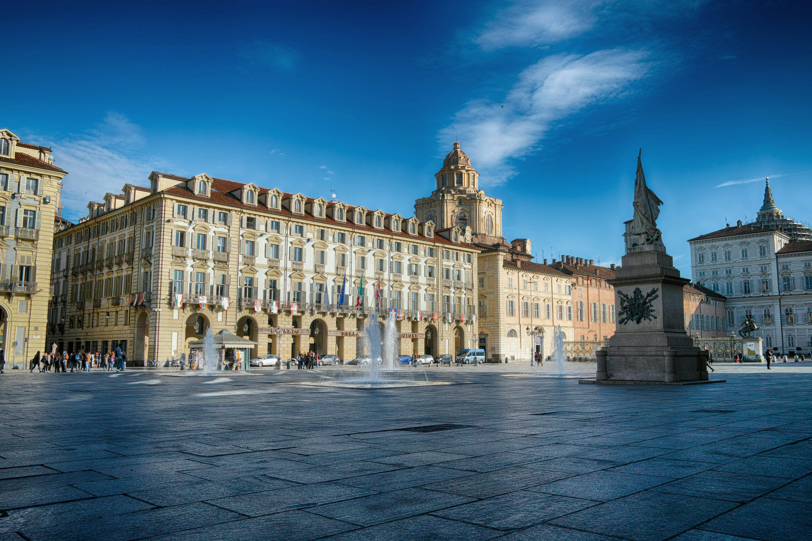

Miért mentünk Torinoba?

Osztályunk Torinoba a múlt megismerése miatt indult, hogy mégjobban tájékozódottak legyünk Don-Bosco életének különböző helyszíneivel, pillanataival és állomásaival.
Kik rendezték a kirándulást?

Támogatók:Kovács Sándor, Szarka Adrienn, Halász József igazgató, Koblencz Máté igazgató helyettes, a vezetőség összes tagja, Rózsás Adrienn osztályfőnök, Tarczaliné Szabó Ágnes ofő helyettes, Kirner Gábor testvér.
Vélemények a kirándulásról:
A.S.
Jól éreztem magam.
A.M.
Nagyon szép volt a tenger.
B.V.
Máskor is el akarok jönni!
I.B.
Emlékezetes volt.
J.ZS.
Jó VÓT :)